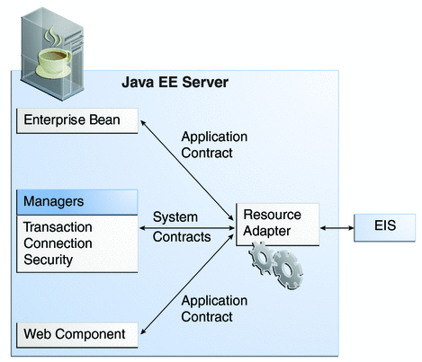

Resource Adapters and Contracts
A resource adapter is a Java EE component that implements the Java EE Connector Architecture for a specific Enterprise Information System (EIS). Examples of EISs include Enterprise Resource Planning (ERP), mainframe transaction processing (TP), and database systems. As illustrated in Figure 29-1, the resource adapter facilitates communication between a Java EE application and an EIS.
Figure 29-1 Resource Adapters
Stored in a Resource Adapter Archive (RAR) file, a resource adapter can be deployed on any Java EE server, much like a Java EE application. An RAR file may be contained in an Enterprise Archive (EAR) file, or it may exist as a separate file.
A resource adapter is analogous to a JDBC driver. Both provide a standard API through which an application can access a resource that is outside the Java EE server. For a resource adapter, the target system is an EIS; for a JDBC driver, it is a DBMS. Resource adapters and JDBC drivers are rarely created by application developers. In most cases, both types of software are built by vendors that sell products such as tools, servers, or integration software.
The resource adapter mediates communication between the Java EE server and the EIS by means of contracts. The application contract defines the API through which a Java EE component such as an enterprise bean accesses the EIS. This API is the only view that the component has of the EIS. The system contracts link the resource adapter to important services that are managed by the Java EE server. The resource adapter itself and its system contracts are transparent to the Java EE component.
Management Contracts
The Java EE Connector Architecture defines system contracts that enable resource adapter life cycle and thread management.
Life Cycle Management
The Connector Architecture specifies a life cycle management contract that allows an application server to manage the life cycle of a resource adapter. This contract provides a mechanism for the application server to bootstrap a resource adapter instance during the deployment or application server startup. It also provides a means for the application server to notify the resource adapter instance when it is undeployed or when an orderly shutdown of the application server takes place.
Work Management Contract
The Connector Architecture work management contract ensures that resource adapters use threads in the proper, recommended manner. It also enables an application server to manage threads for resource adapters.
Resource adapters that improperly use threads can jeopardize the entire application server environment. For example, a resource adapter might create too many threads or it might not properly release threads it has created. Poor thread handling inhibits application server shutdown. It also impacts the application server's performance because creating and destroying threads are expensive operations.
The work management contract establishes a means for the application server to pool and reuse threads, similar to pooling and reusing connections. By adhering to this contract, the resource adapter does not have to manage threads itself. Instead, the resource adapter has the application server create and provide needed threads. When the resource adapter is finished with a given thread, it returns the thread to the application server. The application server manages the thread: It can return the thread to a pool and reuse it later, or it can destroy the thread. Handling threads in this manner results in increased application server performance and more efficient use of resources.
In addition to moving thread management to the application server, the Connector Architecture provides a flexible model for a resource adapter that uses threads:
The requesting thread can choose to block (stop its own execution) until the work thread completes.
Or the requesting thread can block while it waits to get the work thread. When the application server provides a work thread, the requesting thread and the work thread execute in parallel.
The resource adapter can opt to submit the work for the thread to a queue. The thread executes the work from the queue at some later point. The resource adapter continues its own execution from the point it submitted the work to the queue, no matter when the thread executes it.
With the latter two approaches, the submitting thread and the work thread may execute simultaneously or independently from each other. For these approaches, the contract specifies a listener mechanism to notify the resource adapter that the thread has completed its operation. The resource adapter can also specify the execution context for the thread, and the work management contract controls the context in which the thread executes.
Generic Work Context Contract
A generic work context contract enables a resource adapter to control the contexts in which the Work instances submitted by it are executed by the application server's WorkManager. A Generic Work context mechanism also enables an application server to support new message inflow and delivery schemes. It also provides a richer contextual Work execution environment to the resource adapter while still maintaining control over concurrent behavior in a managed environment.
The Generic Work Context contract standardizes the transaction context and the security context.
Transaction Context
The transaction context between the resource adapter and the application server leverages the Generic Work Context mechanism by describing a standard WorkContext, the TransactionContext. It represents the standard interface that a resource adapter can use to propagate transaction context information from the EIS to the application server.
Security Context
The security context between the resource adapter and the application server leverages the Generic Work Context mechanism by describing a standard WorkContext, the SecurityContext, that can be provided by the resource adapter while submitting a Work for execution.
The SecurityContext provides a portable mechanism for the resource adapter to pass security context information to the application server. This work context enables an EIS or resource adapter to flow-in security context information while submitting a Work to a WorkContext for execution.
Work Security Map
A work security map matches EIS identities to the application server domain's identities.
Hints Context
The propagation of Quality-of-Service hints to a WorkManager for the execution of a Work instance is standardized through the HintsContext class. This class provides a mechanism for the resource adapter to pass quality-of-service metadata to the WorkManager during the submission of a Work instance. The application server can use the specified hints to control the execution of the Work instance.
Outbound Contracts
The Connector Architecture defines system-level contracts between an application server and an EIS that enable outbound connectivity to an EIS.
Connection Management Contract
The connection management contract supports connection pooling, a technique that enhances application performance and scalability. Connection pooling is transparent to the application, which simply obtains a connection to the EIS.
Transaction Management Contract
The Connector Architecture supports the concept of transactions - a number of operations that must be committed together or not at all for the data to remain consistent and to maintain data integrity.
A local transaction is limited in scope to a single EIS system, and the EIS resource manager itself manages such transaction. An XA transaction or global transaction can span multiple resource managers. This form of transaction requires transaction coordination by an external transaction manager, typically bundled with an application server. A transaction manager uses a two-phase commit protocol to manage a transaction that spans multiple resource managers or EISs. It uses one-phase commit optimization if only one resource manager is participating in an XA transaction.
The Connector Architecture defines a transaction management contract between an application server and a resource adapter . The transaction management contract extends the connection management contract and provides support for management of both local and XA transactions. These contracts enable an application server to provide the infrastructure and runtime environment for transaction management. Application components rely on this transaction infrastructure to support the component-level transaction model.
An application server is required to support all three levels of transactions:
No transaction support at all - this is typical of legacy applications and back-end systems.
Support for local transactions only
Support for both local and XA transactions
Security Management Contract
The security management contract provides mechanisms for authentication, authorization, and secure communication between a Java EE server and an EIS to protect the information in the EIS.
Inbound Contracts
The Java EE Connector Architecture defines system contracts between a Java EE server and an EIS that enable inbound connectivity from the EIS: pluggability contracts for message providers and contracts for importing transactions.
Messaging Contracts
To enable external systems to connect to a Java EE application server, the Connector Architecture extends the capabilities of message-driven beans to handle messages from any message provider. That is, message-driven beans are no longer limited to handling JMS messages. Instead, EISs and message providers can plug any message provider, including their own custom or proprietary message providers, into a Java EE server.
To provide this feature, a message provider or an EIS resource adapter implements the messaging contract, which details APIs for message handling and message delivery. A conforming resource adapter is assured of the ability to send messages from any provider to a message-driven bean, and it also can be plugged into a Java EE server in a standard manner.
Transaction Inflow
The Connector Architecture supports importing transactions from an EIS to a Java EE server. The architecture specifies how to propagate the transaction context from the EIS. For example, a transaction can be started by the EIS, such as the Customer Information Control System (CICS). Within the same CICS transaction, a connection can be made through a resource adapter to an enterprise bean on the application server. The enterprise bean does its work under the CICS transaction context and commits within that transaction context.
The Connector Architecture also specifies how the container participates in transaction completion and how it handles crash recovery to ensure that data integrity is not lost.